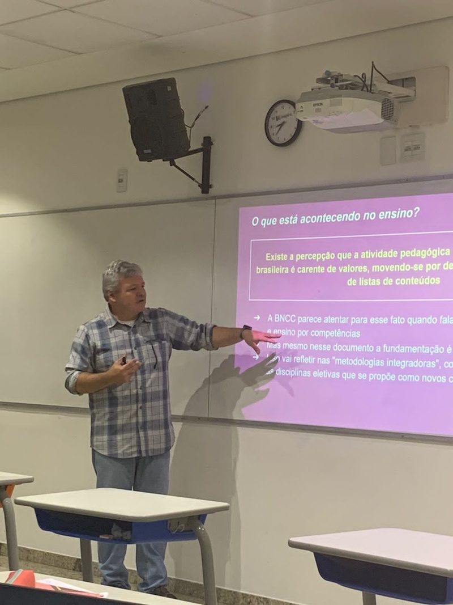
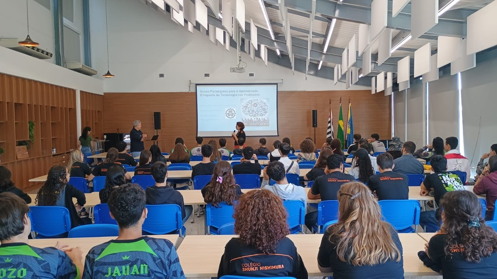
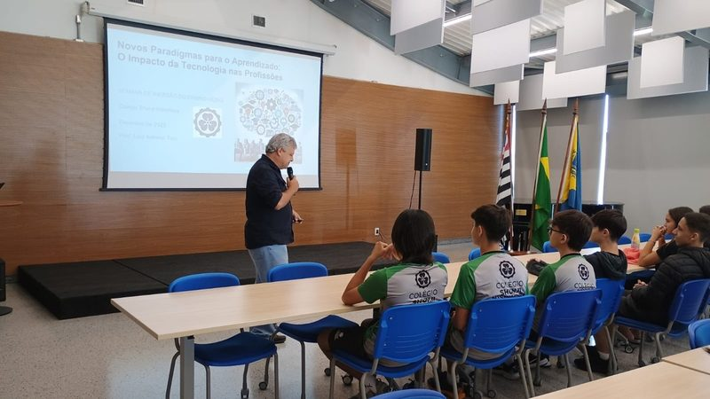

A força do ensino,
o futuro de São Paulo
São Paulo precisa voltar a acreditar que a boa política transforma vidas.
Quem sou eu
Acredito que a política tem um propósito maior: servir às pessoas.
Foi essa convicção que guiou toda a minha trajetória como professor, gestor público e educador. Ao longo de décadas, trabalhei para fortalecer a educação pública, ampliar oportunidades e contribuir para a formação de milhares de jovens em todo o Estado de São Paulo e no Brasil.
- Professor por vocação.
- Gestor público por experiência.
- Engenheiro e Doutor em Tecnologia.
- Décadas dedicadas à educação pública.
- Experiência em gestão educacional nos âmbitos estadual e federal.
- Professor na Fatec de São José dos Campos e na FGV, pesquisador no ITA.
- Foi diretor da Fatec Prof. Jessen Vidal.
- Defensor da valorização dos professores.
- Comprometido com uma educação inovadora e de qualidade.
- Acredita na política como instrumento de transformação.
- Defensor da ética, da transparência e da responsabilidade na gestão pública.
- Pai, esposo e cristão.
Minha história também é construída pelos valores que aprendi dentro de casa. Sou esposo da Walkiria, pai de dois filhos, cristão, e acredito que liderança significa servir, ouvir, respeitar as pessoas e assumir responsabilidades.
Luiz Antonio Tozi, 55 anos. Gestor educacional, engenheiro, professor e doutor em Tecnologia. Casado com Walkiria Tozi e pai de dois filhos.
Trajetória
Uma vida dedicada à educação e ao desenvolvimento de pessoas.
Minha trajetória foi construída com um propósito: fortalecer a educação pública e ampliar oportunidades. Como professor, gestor e servidor público, participei da formação de políticas e projetos que contribuíram para transformar a educação em diferentes níveis.
-
Professor por vocação
Foi na sala de aula que aprendi que a educação transforma vidas. Essa experiência me fez compreender de perto a realidade de estudantes, professores e famílias.
- Formação de alunos e futuros profissionais.
- Valorização da educação como instrumento de transformação.
- Vivência prática dos desafios da escola.
-
Gestor educacional
Levei para a gestão pública a experiência de quem conhece a educação por dentro, trabalhando para fortalecer instituições, modernizar processos e ampliar oportunidades.
- Planejamento e gestão educacional.
- Modernização administrativa.
- Fortalecimento da educação pública.
- Desenvolvimento de políticas educacionais.
-
Centro Paula Souza
Atuei em uma das maiores instituições de ensino técnico e tecnológico da América Latina, contribuindo para o fortalecimento da educação profissional e da gestão educacional.
- Fortalecimento do ensino técnico e tecnológico.
- Incentivo à qualificação profissional.
- Modernização da gestão.
- Expansão de oportunidades para estudantes.
-
Ministério da Educação
Como Secretário-Executivo do Ministério da Educação, exerci a segunda maior função administrativa da pasta, participando da coordenação de políticas públicas para a educação brasileira.
- Coordenação administrativa do MEC.
- Apoio à educação básica, técnica e superior.
- Fortalecimento da gestão pública.
- Desenvolvimento de políticas educacionais.
-
Formação
Acredito que o conhecimento é a base para transformar a sociedade. Minha formação acadêmica sempre caminhou ao lado da minha atuação profissional.
- Engenheiro.
- Professor.
- Doutor em Tecnologia.
- Especialista em gestão educacional.
Investir em educação é investir no futuro. Hoje, coloco minha trajetória a serviço de São Paulo.
Propostas
Educação não é gasto. É o maior investimento que um Estado pode fazer no seu futuro.
Meu compromisso é contribuir para políticas públicas que fortaleçam a qualidade do ensino, valorizem os profissionais da educação, ampliem o acesso à formação técnica e preparem as novas gerações para um mundo cada vez mais conectado, inovador e competitivo.
-
Transformar a educação em caminho de oportunidades
A educação deve ser um instrumento de transformação social, capaz de abrir portas, reduzir desigualdades e criar oportunidades para que cada estudante alcance seu potencial.
- Ampliar oportunidades educacionais em todas as regiões do Estado.
- Incentivar uma educação de qualidade, inclusiva e inovadora.
- Fortalecer políticas que promovam permanência e aprendizagem.
- Estimular o desenvolvimento humano, social e profissional.
-
Valorizar quem ensina e inspirar quem aprende
Os professores são protagonistas na construção de uma educação de qualidade. Valorizar esses profissionais significa fortalecer toda a comunidade escolar.
- Incentivar a formação e o desenvolvimento profissional contínuo.
- Fortalecer ambientes escolares acolhedores e seguros.
- Estimular o protagonismo dos estudantes e a participação das famílias.
- Promover uma gestão educacional baseada em diálogo, respeito e resultados.
-
Preparar as novas gerações para a inovação
As rápidas transformações tecnológicas exigem uma educação que desenvolva criatividade, pensamento crítico e capacidade de inovação.
- Uso responsável da tecnologia como ferramenta de aprendizagem.
- Projetos de inovação, ciência e empreendedorismo.
- Desenvolvimento de competências para as profissões do futuro.
- Aproximação entre educação, pesquisa e desenvolvimento tecnológico.
-
Fortalecer o ensino técnico e profissional
Uma educação conectada às necessidades da sociedade e do mercado amplia oportunidades, fortalece a economia e promove desenvolvimento regional.
- Fortalecer o Centro Paula Souza e suas unidades.
- Expandir o ensino técnico e tecnológico de qualidade.
- Incentivar a formação profissional em diferentes áreas.
- Estimular parcerias entre ensino, setor produtivo e centros de inovação.
- Conectar educação, empregabilidade e desenvolvimento econômico.
-
Gestão eficiente para transformar a educação
Uma gestão eficiente garante que os investimentos em educação cheguem onde realmente fazem a diferença: nas escolas, nos professores e nos estudantes.
- Planejamento e uso responsável dos recursos públicos.
- Transparência e eficiência na gestão educacional.
- Incentivo à inovação e à melhoria contínua.
- Diálogo permanente com educadores, estudantes e sociedade.
Depoimentos
Quem já andou junto.




Quero participar
Campanha se faz com gente. Deixe seu nome e WhatsApp — a equipe do Prof Tozi entra em contato para você fazer parte.
Prefere falar agora? (12) 92005-4180